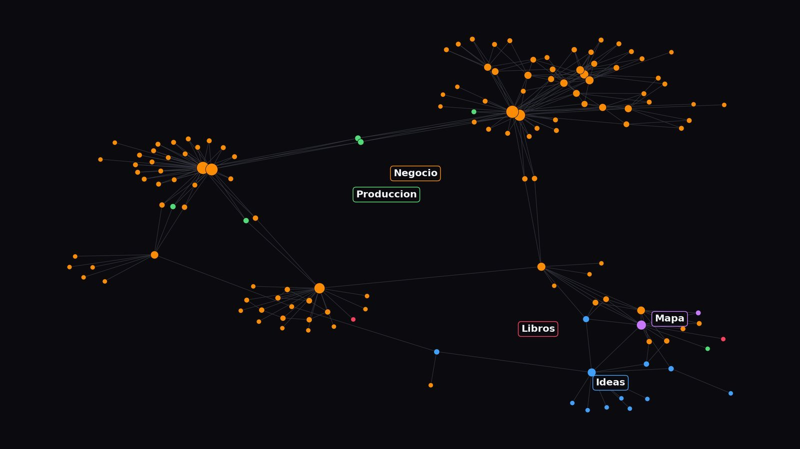

Referencia · 25 min de lectura
Todo el razonamiento: por qué ayuda a las personas, por qué el modelo gasta menos, los detractores y los trucos.

Un cerebro es una carpeta de notas cortas que controla cómo trabaja la IA para tu empresa. Cada nota tiene tres partes:
Los datos no están en el cerebro. Están donde siempre: tu Excel, tu programa de facturación, tu CRM, tu tienda online. El cerebro sabe dónde están y cómo leerlos. Es la diferencia entre un almacén y un encargado que sabe en qué estantería está cada cosa.
Lo que no es: no es un segundo cerebro de lecturas, no es una base de conocimiento donde se guarda todo, y no es "la memoria de la IA". Es la documentación de tu empresa escrita para que la lea una máquina, con la estructura y la concisión que una máquina necesita.
La idea que hay detrás: la eficacia de un modelo de IA depende poco de lo listo que sea el modelo. Depende del contexto que le das y de cómo trabajas con él. Un modelo mediocre con buen contexto gana al más potente del mercado si este tiene que adivinar. Y esto vale para el modelo de hoy y para el que salga el año que viene, porque la carpeta es tuya y se la das a quien quieras.
Así es la nota de finanzas del cerebro de ejemplo, una tienda de zapatillas inventada. Cabe en una pantalla.
---
actualizado: 2026-08-31
dueno: Marta (socia)
---
# Finanzas
## Instrucciones
- Toda cifra sale de la fuente. Si esta nota tiene más de 30 días, avisa y abre el archivo antes de responder.
- Lee solo las columnas que pide la pregunta. No cargues todo.
- Disponible para ads = saldo − pagos pendientes − fijos del mes + cobros previstos − colchón. El colchón es una regla, no una estimación.
- Nunca recomiendes gastar por debajo del colchón. Si la pregunta lo implica, di que no.
## Llamadas
- Cuenta de resultados mensual: _fuentes/finanzas/pyg_2026.csv (columnas: mes, ventas_tienda, ventas_online, coste_ventas, ads, fijos).
- Tesorería y pagos previstos: _fuentes/finanzas/tesoreria_2026-09.csv. Incluye la fila colchon_minimo.
- Retorno de cada campaña: nota de campañas.
## Síntesis vigente (31-ago)
- Ventas ene-ago 269.600 €. Margen bruto 27%. Online del 33% al 41%.
- Cada euro de ads devuelve 4,3 € de venta atribuida.
- Saldo 23.400 €. Pendiente 14.200 € el 15-sep. Colchón 8.000 €. Disponible para ads: unos 8.300 €.
## Decisiones
- 2026-05: colchón mínimo 8.000 €, no se toca.
Fíjate en lo que no hay: ni una tabla de doce meses, ni un párrafo explicando qué es el margen. Eso está en el archivo y en la cabeza de quien lo lea. La nota dice cómo se calcula, dónde están los números y qué se decidió. Cuando alguien pregunta "¿puedo gastar 1.500 euros en anuncios este mes?", la IA lee esta nota, abre los dos archivos que le indica, aplica la fórmula y contesta que sí, con la condición del colchón y citando de dónde sale cada cifra.
La misma anatomía vale para clientes, campañas, productos, tendencias, tareas. Y para nóminas, proveedores o lo que tenga tu empresa. Cambia el contenido, la estructura no.
Dejas de explicar tu empresa cada vez. Sin cerebro, cada conversación con la IA empieza de cero: quién eres, qué vendes, cómo hablas, qué no se puede decir. Lo explicas en enero, lo repites en marzo, en julio lo explicas a medias y la respuesta sale a medias. Con cerebro, está escrito una vez, bien, y la IA lo lee cada vez que lo necesita.
Las instrucciones valen para todos. El socio, la persona de redes, el becario de verano y la IA leen la misma nota: cómo se calcula el disponible, qué no se promete a un cliente, cuándo se entra en una tendencia. Cuando alguien nuevo entra, humano o modelo, lee el índice y cuatro documentos y ya sabe cómo se trabaja aquí.
Las decisiones quedan escritas, fechadas y enlazadas. La campaña de julio enlaza con la tendencia que la originó, con el producto, con el resultado y con lo que se decidió después. Seis meses más tarde puedes ver por qué se hizo. Sin cerebro, eso vive en la cabeza de alguien o en un hilo de WhatsApp.
La IA te pregunta en vez de inventar. Cuando la nota dice "si el dato no está, pregunta", el modelo marca el hueco: [PREGUNTAR AL DUEÑO: ¿llega la reposición antes del 10 de octubre?]. Eso es un empleado bien dirigido. Sin instrucción, rellena el hueco con algo que suena bien y tú te enteras cuando ya está publicado.
Sabes qué delegar y qué no. El cerebro incluye una cruz de tareas: cuánto cuesta que salga mal y si la IA tiene contexto para hacerlo bien. Dos preguntas, diez segundos, y sabes si una tarea se delega, se supervisa o la haces tú.
Aquí está la parte que casi nadie cuenta.
Un modelo de IA cobra por tokens: trozos de texto de unas cuatro letras en castellano. Cobra por lo que lee y por lo que escribe. Lo que lee es lo que más pesa en el día a día, porque cada vez que mandas un mensaje, el modelo vuelve a leer toda la conversación anterior. Toda. Desde el principio.
Una conversación de cuarenta mensajes en la que explicaste tu empresa en el mensaje tres, la corregiste en el ocho y la matizaste en el veinte, se lee entera en cada pregunta nueva. Pagas la explicación, la corrección y el matiz cada vez.
Y hay otro coste escondido: las respuestas malas. Sin contexto, el modelo se equivoca. Tú corriges, él vuelve a generar, tú vuelves a corregir. Cada vuelta es lectura y escritura pagada. La respuesta buena a la primera es la más barata que existe.
Medido sobre el cerebro de ejemplo, la tienda de zapatillas, 65 notas y 5 archivos de datos:
| Qué lee el modelo para responder "¿puedo gastar 1.500 € en ads?" | Tokens |
|---|---|
| El índice, con las instrucciones de lectura | 400 |
| Los 4 documentos del núcleo | 900 |
| La nota de finanzas (instrucciones, llamadas, síntesis) | 500 |
| Los dos archivos de datos a los que apunta | 200 |
| Total | unos 2.000 |
| La misma pregunta dentro de una conversación larga (estimación) | 15.000 a 25.000 |
Y la segunda opción no tiene los números de tesorería, así que pregunta o inventa.
Con el precio de lista de un modelo de gama alta en septiembre de 2026 (5 dólares por millón de tokens de entrada), cien preguntas al cerebro cuestan alrededor de un dólar en lectura. Las mismas cien preguntas dentro de conversaciones largas, alrededor de diez. Y responden peor.
Cada una está en el cerebro de ejemplo y tiene una razón de coste detrás.
1. Índice primero, con instrucciones de lectura. El archivo 00_INDICE dice qué hay en cada carpeta y cómo leer: primero el núcleo, luego solo la nota del área que toque, luego sus llamadas. El modelo lee una página y decide. Sin índice, abre todo o pregunta.
2. Apuntar, no copiar. La nota de productos no tiene la tabla de precios: dice en qué archivo está y qué columnas leer. Si copiara la tabla, pagarías la tabla en cada lectura y, peor, un día la cambias en el Excel y la nota se queda vieja. El modelo lee dos precios distintos y elige uno al azar.
3. Núcleo corto y todo lo demás son hojas. Los cuatro documentos del centro caben en 900 tokens porque son listas, no prosa. Todo lo que no cambia cada semana va ahí. Lo que cambia va en notas de área que solo se leen cuando tocan.
4. Síntesis fechada arriba, nada de historial. Cada nota lleva cinco líneas de lo que hay que saber ahora, con fecha. El historial existe, pero no se lee: se busca cuando hace falta. Es la regla que más ahorra: un área de tres meses puede tener 50.000 tokens de historial y una síntesis de 200.
5. Datos estructurados en la cabecera. Cada nota empieza con actualizado y dueno. El modelo puede mirar treinta cabeceras y saber cuáles están viejas sin leer treinta textos.
6. Instrucción de columnas. La llamada no dice "mira el Excel": dice "columnas mes, ads e ingresos". El modelo lee tres columnas de ocho filas, no un libro de doce hojas.
Los proveedores de modelos cobran mucho menos por texto que ya han leído hace poco. En la API de Claude, releer contexto cacheado cuesta alrededor de una décima parte de leerlo nuevo. La condición es que ese texto sea idéntico y vaya al principio.
Un cerebro cumple esa condición sin que hagas nada: el mismo índice y los mismos cuatro documentos, sin cambios, delante de cada pregunta. Una conversación larga no la cumple nunca, porque cada mensaje cambia el final y el modelo la relee entera.
No necesitas entender la caché. Solo necesitas que el núcleo sea estable y corto. Que es exactamente como está diseñado.
Seis líneas sobre tu negocio, como se lo contarías a alguien en un bar. Quién eres, qué vendes y a qué precio, a quién, qué te diferencia, qué no quieres parecer, por dónde vendes.
Suela Norte. Tienda de zapatillas en el centro de Oviedo con tienda online a toda España. Dos socios, seis años. Vendemos Nike, Adidas, New Balance, Asics, Salomon y Vans, de 85 a 190 euros. Clientes: chavales que ven la zapa en TikTok, gente de 30 que quiere ir cómodo, runners y gente que regala. Nos diferencia: te decimos si te queda mal, cambio en 30 días sin preguntas, stock real. No queremos sonar a tienda de reventa ni a centro comercial. Canales: tienda, web, Instagram y TikTok.
Pega la semilla en el prompt "montar el cerebro" del kit. Salen cuatro documentos: quién, qué, para quién, reglas. Lo que no sepa lo marca con [PREGUNTAR AL DUEÑO]. Contesta y guarda los cuatro en 00_CEREBRO.
Elige dos o tres áreas que te importen ahora, no todas. Por cada una, una nota con la plantilla del kit: instrucciones, llamadas, síntesis, decisiones. La parte que más cuesta es la de llamadas, porque te obliga a saber dónde está cada dato de verdad. Ese esfuerzo es el que luego ahorra todo lo demás.
Apunta a tus archivos reales. Si un dato solo existe en tu cabeza, escríbelo en la síntesis con fecha y ya tienes fuente.
00_INDICE.md: una línea por carpeta y las cinco instrucciones de lectura (están en la plantilla). Es la puerta de entrada de cualquier IA.
Obsidian es gratis y lee carpetas de archivos de texto. Abre la carpeta como vault y pulsa el icono del grafo. Verás el núcleo en el centro y las áreas alrededor. Si una nota está suelta, le falta un enlace.
Abre tu herramienta de IA con acceso a la carpeta (Claude Code o cualquier asistente que lea archivos) y haz una pregunta real. Si la respuesta cita tu nota, abre el archivo que le indicaste y te pregunta lo que no sabe, el cerebro está vivo. Guarda pregunta y respuesta en 10_DEMOS. Es tu prueba de que funciona.
La pregunta va al índice, no al chat. Apuntas la IA a la carpeta y preguntas. Ella lee el índice, abre la nota que toca, sigue sus llamadas y responde citando de dónde sale cada dato.
Cada respuesta que vale se guarda como nota. Un plan, un análisis, un presupuesto: nota nueva en 10_DEMOS, enlazada a lo que usó. La siguiente vez el modelo parte de ahí.
Al cerrar, actualizas la síntesis. Cinco líneas y la fecha. Es lo que hace barata la sesión siguiente.
El historial no se borra y no se lee. Va a una subcarpeta y se busca cuando hace falta. Nunca lo pegues entero en un chat.
Añadir un área nueva se hace con un agente, no a mano. Le dices: "lee el índice y el núcleo, quiero añadir el área X, propón una nota con la plantilla, enlazada al núcleo, y no toques nada de lo existente". Revisas la estructura, le das las rutas a los datos reales y él rellena marcando lo que no sabe. El prompt exacto está en el kit.
Tres reglas para que no se hinche:
REVISION_MENSUAL del kit tiene las tres preguntas listas para pegar.El Reglamento europeo de Inteligencia Artificial (RIA, AI Act) está en vigor para la transparencia desde el 2 de agosto de 2026, y la protección de datos sigue siendo la de siempre. Tres reglas y ya:
1. Esto no sube nunca a un servidor abierto. DNI, cuentas bancarias, historiales médicos, contraseñas, claves de API, contratos con cláusulas de confidencialidad, datos de menores. Si el cerebro lo necesita, se queda en tu ordenador y se apunta como llamada ("está en el archivo X"), no como contenido.
2. Lo que sí sube, anonimizado. Cuatro formas, de más fácil a más seria: - Quitar nombres y sustituirlos por iniciales o códigos (cliente 0042). La lista que une código y nombre se queda en tu ordenador. - Agregar: en vez de 300 filas de clientes, 4 segmentos con sus medias. Para la mayoría de preguntas de negocio basta. - Datos sintéticos: pídele al modelo que genere 30 clientes inventados con la misma forma que los tuyos y trabaja con esos hasta que el sistema esté probado. Así se montó el cerebro de ejemplo de esta guía. - Contrato con retención cero: los planes de empresa de Anthropic, OpenAI y Google permiten que tus datos no se usen para entrenar y se borren tras la respuesta. Si vas a meter datos reales de clientes, es el mínimo. Léelo antes de firmar.
3. Etiqueta. Cualquier anuncio, vídeo o voz generados con IA que publiques lleva la marca de contenido generado. Ponlo como regla en 04_REGLAS y la IA te lo recordará cada vez. Y cuando una IA hable con un cliente (chat, teléfono, avatar), tiene que decir que es una IA en la primera interacción.
Si trabajas con datos especialmente sensibles (salud, menores, biometría), habla con tu asesor de protección de datos antes de montar nada. Esta guía no sustituye eso.
Da igual cuál. El cerebro es tuyo y son archivos de texto; el agente es el que los lee. Lo que necesitas de él: que pueda leer y escribir en una carpeta de tu ordenador y seguir un archivo de instrucciones.
| Agente | Lee y escribe tu carpeta | Sigue un archivo de instrucciones | Lo que yo uso |
|---|---|---|---|
| Claude Code (Anthropic) | Sí, nativo | Sí, CLAUDE.md en la carpeta |
Es el que veis en la charla |
| ChatGPT con carpeta o proyecto | Sí, con la app de escritorio o subiendo archivos | Sí, instrucciones del proyecto | Vale para empezar |
| Gemini | Sí, con Drive o la app | Sí, instrucciones del gem | Vale para empezar |
| Un modelo local (Ollama y similares) | Sí, con un agente encima | Sí | Para datos que no pueden salir de tu ordenador |
Empieza con el que ya pagas. Cambia cuando el otro sea mejor. La carpeta se queda.
Esto tiene críticos. Te los cuento antes de que los pienses, porque en casi todo llevan razón y son la razón de las reglas de arriba.
"El segundo cerebro es una trampa: guardas y no haces." Cierto para el segundo cerebro de lecturas: la mitad son cementerios de notas que nadie abre. Este cerebro no guarda lecturas, guarda instrucciones y llamadas, y lo lee la máquina. Solo cuenta si devuelve respuestas. Regla: sin una carpeta 10_DEMOS con preguntas reales respondidas, lo que tienes es un cementerio.
"Cuanto más le escribes a la IA, menos caso te hace." Cierto. Los archivos de instrucciones largos hacen que el modelo trate igual lo importante y lo menor y acabe ignorando reglas; el propio fabricante de Claude lo avisa en su documentación. Por eso el núcleo tiene tope, las notas caben en una pantalla y las reglas son pocas y van por orden de importancia.
"Más contexto, peores respuestas." Cierto y medido: un estudio de Chroma con 18 modelos de primera línea encontró que todos empeoran cuando crece la entrada, de forma consistente a partir de unos 30.000 tokens, aunque anuncien ventanas de un millón. El cerebro existe para que el modelo lea menos: una nota de 500 tokens y dos columnas de un archivo, no un manual. Regla: ninguna consulta debería meter más de 30.000 tokens; si un área pasa de ahí, se parte.
"La documentación se queda vieja y la IA miente con seguridad." Es la crítica más seria y la única que el diseño no resuelve solo. Por eso cada nota lleva fecha y dueño, la instrucción de desconfiar de lo viejo está escrita en el índice, los datos viven en la fuente (que sí se actualiza porque es tu Excel de siempre) y hay una revisión de 15 minutos al mes. Un cerebro sin dueño se pudre en tres meses. Con dueño, envejece a la velocidad de tu Excel.
"Archivos de texto planos no escalan, y eso no es memoria." Cierto a escala de miles de notas o de decenas de usuarios. Una pyme tiene decenas, y a ese tamaño el índice, los nombres claros y una búsqueda de texto sobran. El día que pase de mil notas, se le pone un buscador encima sin tocar los archivos. Y sobre el nombre, razón también: esto no es la memoria de la IA. Es la documentación de tu empresa escrita para que la lea una máquina.
Dos preguntas por tarea. ¿Cuánto cuesta que salga mal? ¿La IA tiene una nota con instrucciones y llamadas para hacerla bien?
| Tiene nota | No tiene nota | |
|---|---|---|
| Error barato | Delegar: radar de tendencias, borradores, descripciones de producto, resúmenes | Delegar con [PREGUNTAR AL DUEÑO] activado |
| Error caro | Supervisar: presupuestos, precios, respuestas a clientes | Solo tú: pedidos, pagos, promesas a clientes |
Cada vez que una tarea de la columna derecha se repite, al cerebro le falta una nota. Escríbela y la tarea se mueve a la izquierda.
Esto es lo que hace que el cerebro se use de verdad en vez de quedarse bonito. Son las reglas con las que trabajo yo cada día con una IA en mi disco duro, y todas están montadas en el cerebro de ejemplo.
La bandeja de notas sueltas. Una carpeta _bandeja donde cae todo lo que no sabes dónde va: la foto de un ticket, una idea en el móvil, un pantallazo de la competencia, un correo pegado. Sin título, sin ordenar, sin pensar. La IA la vacía: lee cada cosa, decide a qué área pertenece, la mueve con un nombre que diga qué es y con fecha, actualiza la síntesis si hace falta y marca [PREGUNTAR AL DUEÑO] en lo que no sabe. Tú decides, ella mueve. El orden deja de ser tu trabajo.
La nota "qué toca ahora". Un archivo 00_QUE_TOCA en la raíz con la prioridad única del mes, tres tareas, y lo que no toca. Es lo primero que lee cualquiera, humano o IA, antes de hacer nada. Evita la trampa de ponerte a mejorar el sistema en vez de a vender.
Cerrar sesión son cinco líneas. Cada vez que terminas de trabajar con la IA, ella reescribe el bloque de estado: fase, qué se hizo, qué espera de quién, siguiente paso. Cuesta un minuto y es lo que hace barata la sesión siguiente: el modelo lee cinco líneas en vez de reconstruir dónde estabas.
El historial no se lee, se busca. Lo que deja de ser verdad va a _historial con fecha. Nunca se borra y nunca se pega entero en un chat. Cuando hace falta saber qué se decidió en junio, la IA busca dentro y saca la línea. Un historial de un año cabe ahí sin que el modelo lo pague cada vez.
Un índice por proyecto, no un manual. Cada área tiene una nota de una pantalla. Si necesita más, se parte. Si un documento explica algo que el modelo ya sabe hacer, sobra.
Las reglas son pocas y van por orden. Cuando una corrección se repite dos veces, se convierte en una línea de 04_REGLAS o de la nota del área. Cuando una regla lleva seis meses sin hacer falta, se va a historial. Las reglas vigentes viven en un solo sitio.
La IA mueve, tú decides. Estados, carpetas, nombres, fechas: lo hace ella. Prioridades, precios, lo que se publica: lo decides tú. Cada vez que te pilles ordenando archivos a mano, es una instrucción que falta en el cerebro.
Buscar antes de abrir. Si no sabes dónde está algo, no navegues: pídele a la IA que busque el texto en la carpeta. Un índice de nombres bien puestos y una búsqueda valen más que cualquier estructura perfecta.
El cerebro de ejemplo de esta guía, Suela Norte, es una empresa inventada con datos simulados. Cualquier parecido con una tienda real de Oviedo es casualidad, y si existe, que me escriba.
Semana de la IA 2026 · Cluster TIC Asturias · 25 de septiembre · Adrián Nicieza, edrian.exe · contacto@edrianexe.com · @edrian.exe
Contenido generado con ayuda de IA y revisado por un humano. Datos de la tienda de ejemplo, simulados.